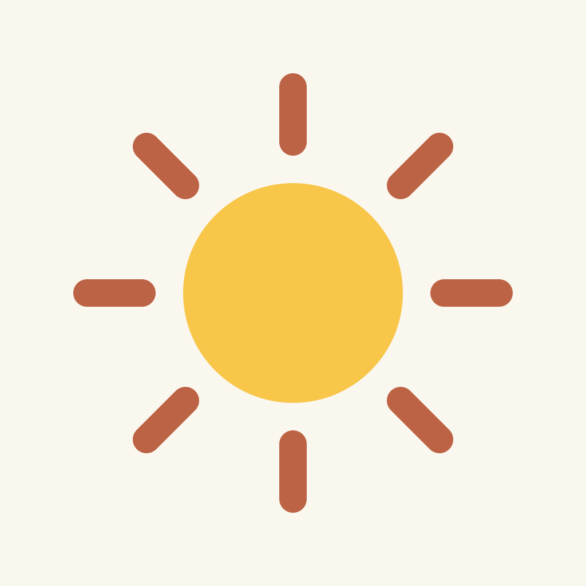
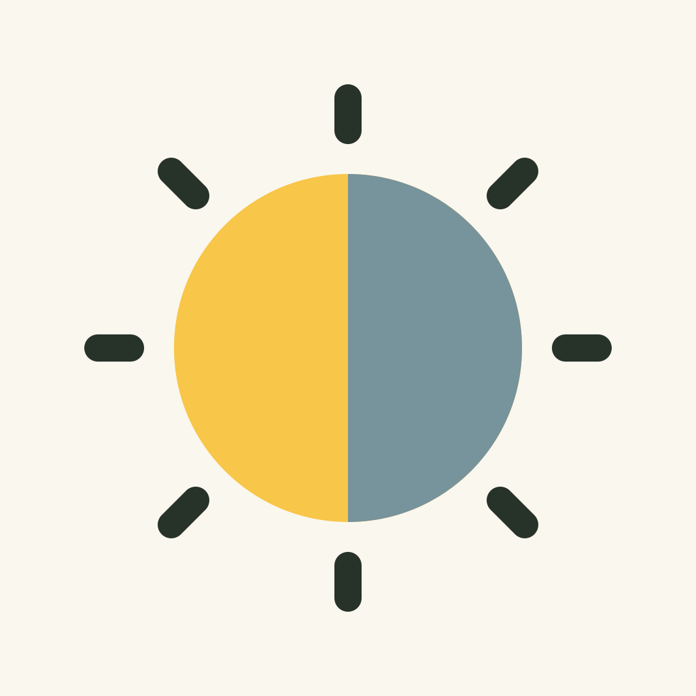
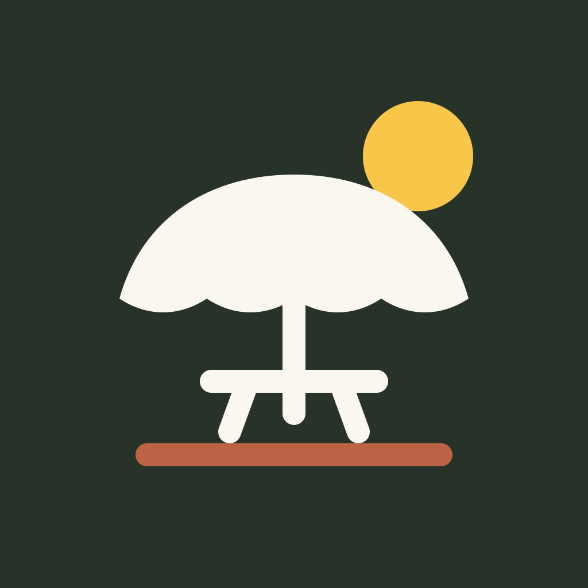
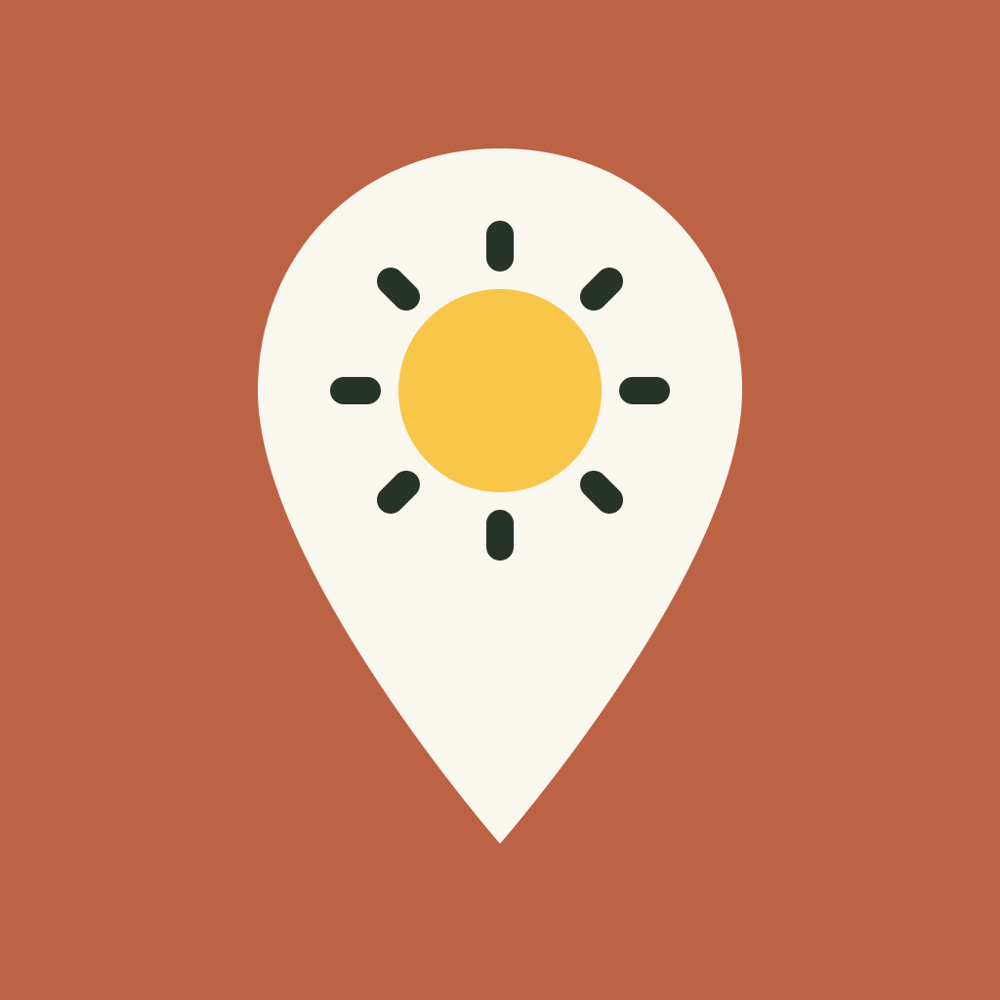

Cinco ideas para la app, con una vista en pequeño para imaginar cómo se verían en el móvil.

Cálido, directo y reconocible.

Las dos caras de la app en un símbolo.

Una invitación a salir y sentarse.

El mapa y el sol, juntos.
El sol que se cuela entre edificios.